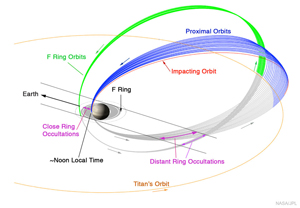

# Welcome to the Ring-Moon Systems Node's Cassini Home Page
## Introduction
The PDS Ring-Moon Systems Node archives and distributes Cassini remote sensing data sets
(CIRS, ISS, UVIS, VIMS, and Radio Science ring occultations).
* Use **[OPUS](/search/)**
to search for specific Cassini data products using a wide range of criteria including enhanced geometric metadata produced at the Rings node. The enhanced geometric metadata includes information appropriate to planet and satellite searches as well as enhanced ring geometry.
* Supports CIRS (limited), ISS, UVIS, and VIMS.
* Search results include data files, tables of associated metadata, and browse thumbnails for each image. User selected data files can be bundled as [tar.gz](/help/targz.html) files for easy downloading.
The first Cassini data release was on July 1, 2005 with subsequent data
releases at three month intervals. The last scheduled mission data release was in
early July, 2018.
During FY18, while the team was preparing the data for releases following the spacecraft's
plunge into the atmosphere of Saturn, they, in conjunction with the PDS, also began the
task of organizing supplemental documentation and in some cases derived products from the mission.
* The RMS Node will be the curating PDS Node for all such documents and products produced by
the Cassini Rings Working Group.
* Projected additional datasets include occultation data sets for the entire mission from RSS, UVIS, and VIMS;
a data set of ISS mosaics of the F-Ring; separate ISS radial profiles of the bright and faint rings of Saturn; a data set of
ISS high resolution rings images with radial structure subtracted; and a data set of VIMS reflectance spectra of the rings.
* Projected documentation includes substantial sets of observation planning information for all of the rings observations.
* As each data or document set becomes available we will post information on
our home page, in these Cassini information pages, and release announcements through the
PDS Subscription Service,
and through announcements in PEN.
### Volume 1 of the Cassini Mission Final Report
* The Cassini mission team made a major effort to summarize the mission in a multi-volume report to NASA. Volume 1 contains the science
component: Mission Overview, Science Objectives and Results while technical information is contained in additional volumes
archived at the Jet Propulsion Lab. Below are links to the / volume 1 document, and extracted sections relevant to the RMS Node.
The / document also is available at the Atmospheres Node's
Cassini Archiving web pages.
* The Full Volume 1 File (1759 pages).
* The Full Volume 1 report.
* Overview and Bibliography
* The Science Highlights and Assessments of Goals..
* The Science Bibliography.
* Instrument Sections
* The Composite Infrared Spectrometer (CIRS) Section.
* The Imaging Science Subsystem (ISS) Section.
* The Radio Science Subsystem (RSS) Section.
* The Ultraviolet Imaging Spectrograph (UVIS) Section.
* The Visual and Infrared Mapping Spectrometer (VIMS) Section.
* Science Discipline Sections
* The Icy Satellites Section.
* The Rings Section.
* Cassini data is curated at five different PDS Nodes. The lead node for the mission is the
Atmospheres Node which maintains an omnibus set of
Cassini Archiving
web pages. These contain a wealth of supplemental information for understanding Cassini and the observations and are updated as
new material becomes available.
* Master Schedule (updated 7/24/17). This is an "as-planned"
listing of observations spanning the interval from May 14, 2004 to July 9, 2017. The list contains 61,874 entries
and may be downloaded and sliced and diced to make your own listing.
### The tabs associated with this page.
The tabs associated with this page describe the Cassini instruments and data
relevant to planetary ring studies, provide access to the data, and links to
sites within and outside the PDS likely to be of use.
* [Enhanced Cassini Support](enhanced.html)
* Links to supplemental information and Users Guides developed to improve the search and ease of use of Cassini data.
* [Instruments and Data](data.html) \- Information and data by instrument.
* [CIRS](cirs/index.html): calibrated occultations & spectra
* [ISS](iss/index.html): raw & calibrated images plus calibration files
* [RSS](rss/index.html): occultations. Raw RSS data may be obtained from the PDS Atmospheres Node.
* [UVIS](uvis/index.html): raw images, occultations & spectra, plus calibration files.
* [VIMS](vims/index.html): raw images, occultations & spectra, plus calibration files.
* [Cassini Links](links.html) \- Links web pages and resources outside the Ring-Moon Systems Node.
## Also at the Ring-Moon Systems Node
* [CDAP](/roses/cdap.html) \- Our support page for the current ROSES Cassini Data Analysis Program (C.10)including links to Cassini data at other PDS Nodes.
{kind=link}